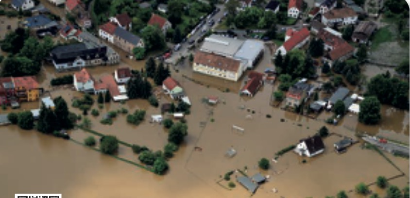

Séance 1 — Le risque majeur : définition et classification
Compétences travaillées dans cette séance
- C2 Q1 — Identifier le problème pose dans la situation.
- C2 Q2 — Relever les éléments de la situation.
- C3 Q3 — Identifier la définition du risque majeur.
- C3 Q4-5 — Analyser les composantes et les caractéristiques du risque majeur.
- C2 Q6 — Classer les risques majeurs par famille.
Situation — Inondations dans l'Aude

Dans l'Aude, de violents orages ont provoqué de graves inondations. Le bilan est tres lourd : 11 morts, 2 disparus et 5 blessés graves. Les dégâts matériels sont tres importants et plus de 1 500 foyers ont ete privés d'électricité. Les établissements scolaires ont ete fermés et les transports scolaires suspendus momentanement dans tout le département.
| Élément | Votre réponse |
|---|---|
| Type de catastrophe | |
| Conséquences humaines | |
| Conséquences matérielles |
Conséquences humaines : 11 morts, 2 disparus, 5 blessés graves.
Conséquences matérielles : Degats importants, 1 500 foyers privés d'électricité, établissements scolaires fermés, transports suspendus.
Doc. A — Définition du risque majeur Source : d'après Foucher CAP PSE, chap. 9
Un risque majeur est la possibilité qu'un événement d'origine naturelle (par exemple un séisme) ou technologique (risque nucléaire) se produise, entraînant des conséquences graves humaines et matérielles qui depassent les capacités de reaction de la société.
L'existence d'un risque majeur est liee :
- a la presence d'un événement potentiellement dangereux : l'alea (manifestation d'un phénomène naturel ou lie a l'homme) ;
- a l'existence d'enjeux (ensemble des personnes et des biens pouvant etre affectes).
Doc. B — La courbe de Farmer Source : d'après Foucher CAP PSE
| Domaine | Type de risque | Frequence | Gravite |
|---|---|---|---|
| 1 | Risque individuel de la vie quotidienne | Forte | Faible |
| 2 | Risque moyen | Moyenne | Moyenne |
| 3 | Risque collectif rare = RISQUE MAJEUR | Faible | Forte |
Doc. C — Classification des risques majeurs Source : d'après Foucher CAP PSE + cypres.org

Risques d'origine TECHNOLOGIQUE
Lies a l'activité humaine :
- Risque industriel (incendie, explosion, gaz toxique)
- Risque nucléaire
- Transport de matières dangereuses (TMD)
- Rupture de barrage
- Risque minier
Risques d'origine NATURELLE
Lies a l'environnement naturel et au climat :
- Inondation
- Séisme / tremblement de terre
- Eruption volcanique
- Avalanche, tempête, cyclone
- Mouvement de terrain, feu de foret
- Tsunami / raz-de-maree
| Situation | Famille de risques |
|---|---|
| La tempête Xynthia a dévasté l'ouest de la France. De puissantes rafales de vent et des vagues ont provoqué une inondation. 27 personnes ont trouve la mort. | |
| L'usine AZF a ete détruite le 21 septembre 2001 par l'explosion d'un stock de nitrate d'ammonium, entraînant la mort de 31 personnes et 2 500 blessés. |
Usine AZF : Risque majeur d'origine technologique (explosion industrielle).
QCM Un risque majeur est caractérisé par :
QCM L'alea représente :
V/F Un séisme est un risque majeur d'origine technologique.
V/F L'explosion d'une usine est un risque d'origine technologique.
QCM Les enjeux représentent :
V/F Une inondation est un risque majeur d'origine naturelle.
V/F Le risque TMD (transport de matières dangereuses) est un risque d'origine naturelle.
Reponse courte Complétez : ALEA + _______ = RISQUE MAJEUR
Séance 2 — Les risques majeurs au niveau local
Compétences travaillées dans cette séance
- C3 Q7 — Identifier le DICRIM et son utilite.
- C3 Q8 — Rechercher les risques de sa commune.
- C3 Q9-10 — Identifier les moyens d'alerte et le dispositif FR-Alert.
- C3 Q11 — Reconnaitre le signal national d'alerte.
Doc. D — Les sources d'information sur les risques majeurs Source : d'après Foucher CAP PSE

Le Document d'Information Communal sur les Risques Majeurs (DICRIM), consultable en mairie, informe les habitants de la commune sur les risques d'origine naturelle ou technologique qui les concernent.
Le DICRIM :
- sensibilise aux mesures de prévention et de sauvegarde prises pour s'en protéger ;
- informe sur les comportements a tenir en cas d'événement majeur.
Une personne informee est plus efficace en cas de crise et se protege donc mieux des risques encourus.
7.1 Nommez le document qui permet d'identifier les risques majeurs au niveau de votre commune.
7.2 Précisez le lieu ou chaque citoyen peut se procurer ce document.
7.3 Indiquez l'interet d'élaborer ce document pour les citoyens.
7.2 : A la mairie de la commune concernée.
7.3 : Ce document a caractere préventif vise a faire connaitre a la population les risques auxquels elle est exposée, leurs conséquences et les mesures de prévention et de sauvegarde pour limiter les effets.
| Nom de votre commune | Risques naturels | Risques technologiques |
|---|---|---|
Doc. E — Le système d'alerte (SAIP) Source : d'après Foucher CAP PSE + interieur.gouv.fr


Le Système d'Alerte et d'Information aux Populations (SAIP) est un ensemble d'outils qui permet d'avertir la population d'un danger imminent :
- Sirènes : son module (monte et descend) pendant 1 min 41 s, repete 3 fois.
- Radio, television, téléphone.
- Messages diffuses par véhicules motorisés ou panneaux lumineux.
- FR-Alert : notifications sur les téléphones mobiles des personnes présentes dans la zone a risque.
Signal national d'alerte
Son module (monte et descend) = DANGER
Signal de fin d'alerte
| Signal | Durée | Type de son | Signification |
|---|---|---|---|
| Signal d'alerte | |||
| Signal de fin d'alerte |
Signal de fin d'alerte : 30 secondes, son continu = DANGER ECARTE.
QCM Le DICRIM est consultable :
Reponse courte Que signifie le sigle DICRIM ?
QCM Le signal national d'alerte dure :
V/F Le signal de fin d'alerte est un son continu de 30 secondes.
V/F FR-Alert envoie des notifications sur les téléphones mobiles.
QCM Le site pour connaitre les risques de sa commune est :
V/F Le son module signifie que le danger est écarté.
V/F Le DICRIM informe sur les comportements a tenir en cas d'événement majeur.
Séance 3 — La conduite a tenir et le PPMS
Compétences travaillées dans cette séance
- C3 Q12 — Identifier les bonnes attitudes face a un risque majeur.
- C3 Q13 — Rechercher la conduite a tenir dans sa commune.
- C3 Q14 — Identifier le role du PPMS en établissement scolaire.
- C4 Q15 — Proposer la conduite a tenir pour la situation initiale.
Doc. F — Les consignes de bonne conduite Source : d'après Foucher CAP PSE + gouvernement.fr

Écouter la radio
Monter a pied dans les étages
Fermer portes, fenetres, aérations
Couper gaz et électricité
Attendre les consignes des autorites
Se deplacer uniquement sur ordre des autorites
Ne pas téléphoner (liberer les lignes pour les secours)
Ne pas aller chercher les enfants a l'école
Ne pas s'engager sur une route inondee
Ne pas descendre dans un parking souterrain
Ne pas boire l'eau du robinet
Ne pas fumer
| Attitude | Oui | Non |
|---|---|---|
| Je cours chercher les enfants a l'école. | ||
| Je me confine dans un local en calfeutrant les ouvertures. | ||
| Je me rapproche du lieu du sinistre pour aider. | ||
| Je laisse le réseau téléphonique libre. | ||
| Je me tiens informe en écoutant la radio. | ||
| Je peux sortir quand j'entends le son continu de fin d'alerte. |
| Un risque de ma commune | Conduite a tenir |
|---|---|
Doc. G — Le PPMS Source : d'après Foucher CAP PSE + Éducation nationale

Le PPMS est un plan d'organisation interne mis en place et déclenché par le chef d'établissement scolaire pour protéger le personnel et les élèves des effets d'un risque majeur.
- Etabli a partir de l'analyse des risques majeurs identifies sur la commune.
- Prevoit des dispositions pour assurer la mise en sûreté des occupants en attendant les secours.
- Attribue a chaque personnel un role precis.
- L'exercice de simulation est renouvelé chaque année.
14.1 Indiquez la signification du sigle PPMS.
14.2 Nommez la personne qui déclenché le PPMS.
14.3 Précisez la fréquence des exercices de simulation.
14.4 Indiquez l'objectif du PPMS.
14.2 : Le chef d'établissement.
14.3 : Tous les ans (exercice annuel).
14.4 : Proteger le personnel et les élèves des effets d'un risque majeur en attendant l'arrivee des secours.
| Nature du risque | Conduite a tenir |
|---|---|
Conduite a tenir : Se mettre en sécurité, monter a pied dans les étages, ne pas descendre dans un parking souterrain, couper gaz et électricité, fermer fenetres et volets, se tenir informe en écoutant la radio, ne pas s'engager sur une route inondee, ne pas aller chercher les enfants a l'école, ne pas téléphoner.
Je retiens l'essentiel — Module B2
1. Le risque majeur
Définition : Possibilite qu'un événement se produise (alea) entraînant des conséquences graves humaines et matérielles (enjeux) qui depassent les capacités de reaction de la société.
Caracteristiques : Faible fréquence + forte gravité.
Deux familles : risques d'origine naturelle (inondation, séisme, tempête...) et risques d'origine technologique (industriel, nucléaire, TMD...).
2. Les risques au niveau local
Le DICRIM (consultable en mairie) informe les citoyens sur les risques de leur commune et les réflexes a adopter.
3. La conduite a tenir
- Signal d'alerte : 3 x 1 min 41 s (son module) = DANGER
- Fin d'alerte : 30 s (son continu) = DANGER ECARTE
- FR-Alert : notifications géolocalisées sur téléphones
- Se mettre a l'abri, écouter la radio, ne pas téléphoner, ne pas aller chercher les enfants.
- PPMS : plan déclenché par le chef d'établissement pour protéger élèves et personnel.
V/F En cas de risque majeur, il faut aller chercher ses enfants a l'école.
QCM Le PPMS est déclenché par :
QCM Que signifie le sigle PPMS ?
V/F Il faut téléphoner a ses proches en cas de risque majeur.
V/F L'exercice PPMS doit etre renouvelé chaque année.
QCM En cas d'inondation, il faut :
V/F Le son continu de 30 secondes signifie que le danger est écarté.
Reponse courte Complétez : Le PPMS est déclenché par le _______ d'établissement.